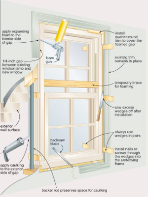

Len Churchill
New windows can make your home more energy efficient — and add charm and style. With a little guidance and practice, even beginning DIYers can master this weekend home-improvement project.